항모 관련 잡담 (9/2)
게시: 2021-09-02T06:30:47+09:00
<급강하 폭격기의 몰락> 영화 미드웨이를 보면 어뢰를 쏘는 뇌격기는 맞아죽기 딱 좋을 뿐이고 (un-PC주의) '남자라면' 급강하 폭격기가 역시 쵝오라는 생각이 들지만 1943년 하반기부터 본격 투입된 Casablanca급 호위항모들의 표준 구성은 전투기와 뇌격기의 28대 조합. 왜 급강하 폭격기가 빠졌을까? 이유는 크게 3가지. 1) 호위항모의 주임무는 대잠전 그에 따라 어뢰와 폭뢰, 큰 폭탄 작은 폭탄 등을 다양하게 구비할 수 있는 뇌격기가 더 적합했음. 2) 그냥 전투기가 해도 되네? (사진1) F6F Hellcat과 F4U Corsair 같은 대형 전투기가 나오면서 얘들이 장착하는 폭장량이 급강하 폭격기를 능가. 게다가 특히 로켓탄이 도입되면서 그냥 전투기에서 쏘아대는 로켓탄이 훨씬 더 정확하고 안전하게 목표물을 타격하게 되면서 굳이 위험한 급강하 폭격을 할 이유가 없어짐. 3) SB2C Helldiver (사진2) 미드웨이에서 맹활약했던 SBD Dauntless는 이미 낡은 기종이 되어가고 있었으므로 이를 대체하기 위해 야심차게 준비했던 것이 Curtiss사의 SB2C Helldiver. SBD는 Scout Bomber Douglas였고 SB2C는 Scout Bomber Type2 Curtiss였는데, 문제는 이 Helldiver가 정말 헬스러웠다는 것. 돈틀리스보다 더 크고 더 빠른 기체였지만 정작 조종성이 개판이라서 모두가 싫어했고 SB2C를 Son-of-a-Bitch-2nd-Class라고 다들 불렀음. 함재기로서는 치명적이게도 착함 속도가 너무 빨라서 호위항모에서는 아예 운용이 불가능했고 정규항모에서도 많은 사고와 문제를 일으킴. USS Yorktown (CV-10)에서는 아예 운용 기종에서 빼버렸음. 이 기체는 결국 급강하 폭격기라는 기종 자체 뿐만 아니라 Curtiss 항공기 제작사의 몰락에 결정적인 역할을 한 셈.
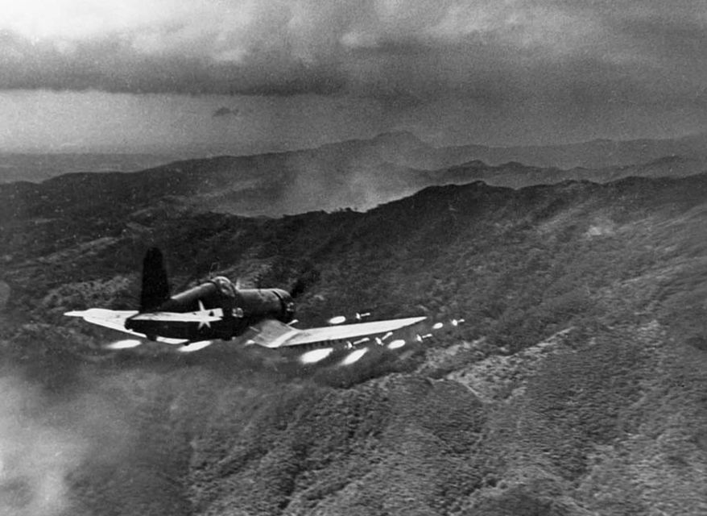 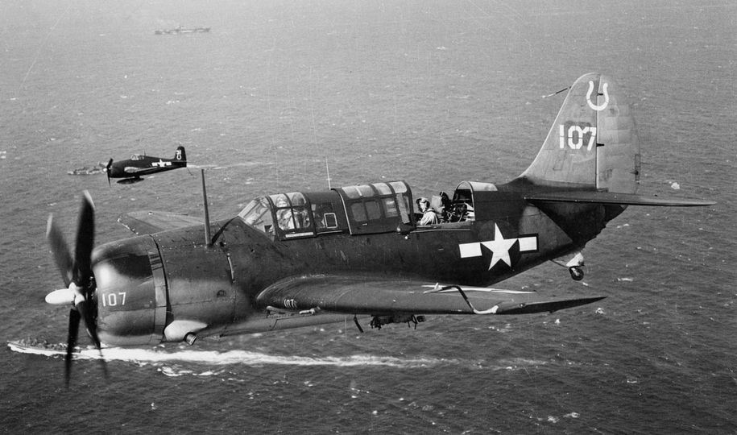
<101 vs. 27> 월남전에서 맹활약한 AD-1 Skyraider는 WW2 때부터 개발되었으나 WW2 종료 후에야 취역. 한국전에서 최초로 실전 투입됨. 월남전에서는 무지막지한 폭장량과 두꺼운 장갑으로 그야말로 하늘의 탱크 역할을 했는데 그건 한국전에서의 뼈아픈 경험 덕분. 한국전 초기 저공근접지원 역할을 수행할 때 부칸군의 대공포에 큰 피해를 입은 뒤 기체 아래에 약 280kg의 알루미늄 장갑판을 덕지덕지 붙인 뒤 생존성이 좋아짐. 한국전에서 총 128대의 AD Skyraider를 잃었는데, 101대는 격추되었고 27대는 착함 사고로 상실. 정말 항모 착함은 위험위험. 참고로 베트남전 기간 중 미해군보다 미공군에서 훨씬 더 많은 AD Skyraider를 출격시켰는데, 베트남전 기간 중 상실된 AD Skyraider는 해공군 다 합해서 266대. ** 사진은 USS Princeton에서 폭탄을 주렁주렁 매달고 이륙하는 AD-1 Skyraider
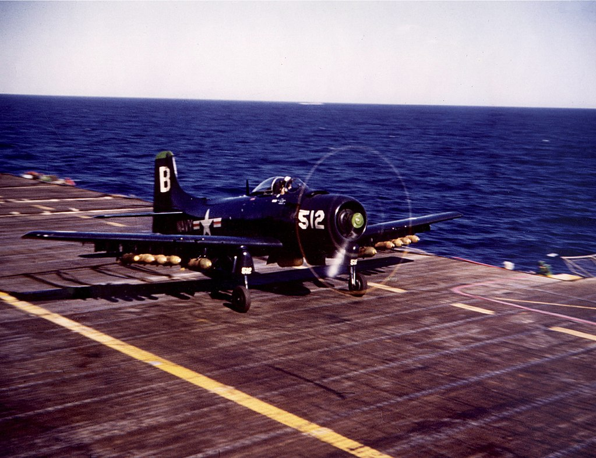
<레이더가 뭐가 좋다는 거지요?> 상대를 수상함으로 한정한다면 사람의 눈이나 레이더나 전함 꼭대기 높이에서 볼 수 있는 약 30km 정도 거리인 수평선까지만 볼 수 있는 것은 마찬가지. 따라서 레이더로 보든 망원경을 든 사람의 눈으로 보든 볼 수 있는 거리는 마찬가지. 그래서 레이더를 더 일찍 사용했던 로열 네이비 전함과 미해군 전함이 레이더 덕을 본 것은 모두 야간 해전. 사람의 눈은 야간에는 안 통하지만 레이더는 통했기 때문. 민도(民度)가 높은 일본 해군은 당근을 먹으며 야간 시력을 키워 그를 극뽁 (아님). 레이더가 야맹증 외에도 진가를 발휘한 것은 더 높은 곳에 올라가서 볼 때. 그래서 미해군은 큰 항공기에 레이더를 달고 올라갈 생각을 WW2 때부터 시작. 미해군 최초의 AEW는 TBM Avenger. APS-20 S-band 레이더를 장착했는데 불행히도 개발 완료 전에 WW2가 끝남. 그러나 한국전에서는 AD-1 Skyraider에 radar를 장착하여 띄우기 시작. 사진1의 저 해맑은 무장사의 뒤에 보이는 것이 레이돔을 동체 하에 장착한 Skyraider. 사진2는 1951년 8월, 한국 근해에서 early-warning radar picket 임무를 띠고 편대 비행 중인 USS Boxer (CV-21) 소속 Douglas AD-3W Skyraider들. 동체 밑의 둥근 레이더 돔이 보임.
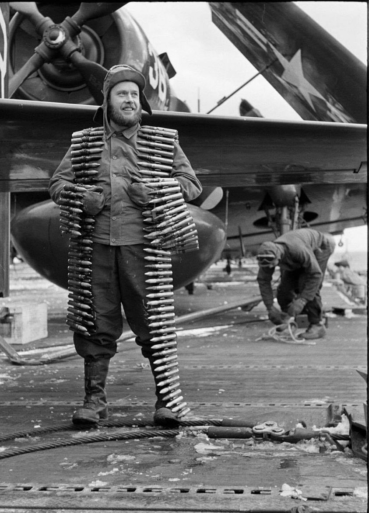 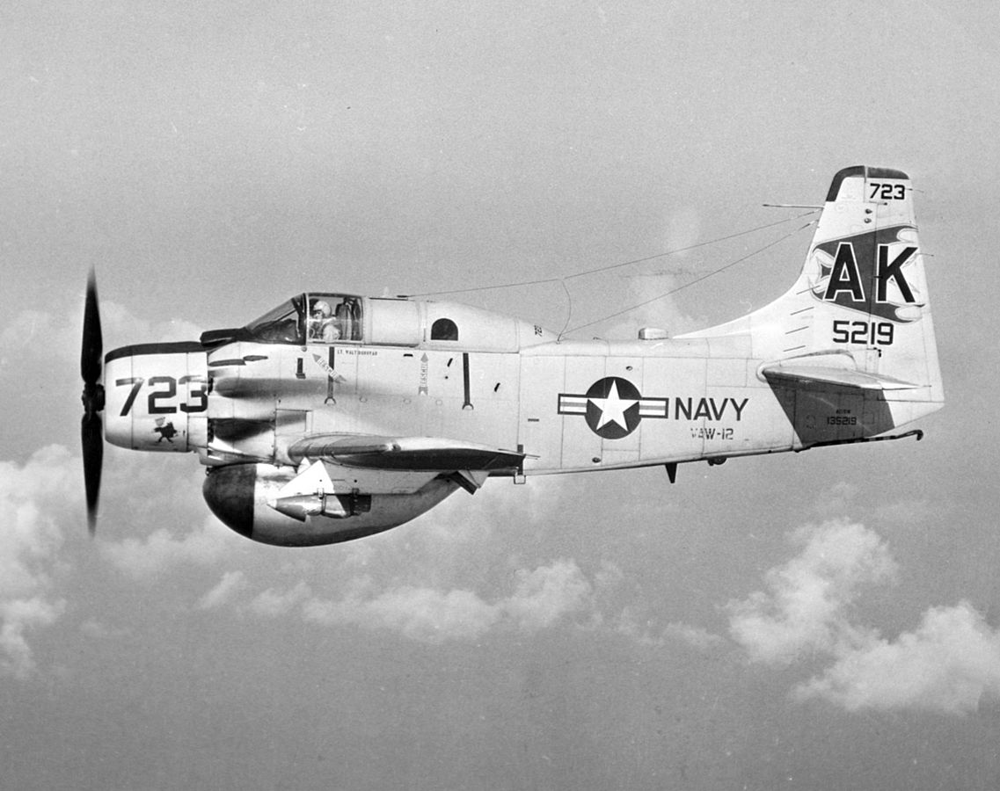
<일본군이 호구냐?> 유럽에서 맹위를 떨치던 B-17은 태평양에서는 ㅂㅂ 취급을 당했는데, 고공에서 떨어뜨린 폭탄이 도시는 어느 정도 맞춰도 움직이는 배를 맞추기는 쉽지 않았기 때문. 그래서 태평양에서는 급강하 폭격기가 대세였음. 그런데 급강하 폭격기가 몰락한 이유 중 하나가 사진에 나오는 skip bombing (물수제비 폭격). 미군이 반년간 연습한 뒤 1943년부터 사용하기 시작한 저 기법으로 저공에서 폭탄을 떨구면 수면 위로 폭탄이 통통통 튀어 배 옆구리를 강타. 거의 빗나가지도 않음. 문제는 저렇게 큰 폭격기가 저렇게 낮게 날면 일본해군 고사포에 맞지 않을까 하는 걱정. B-25 등과 같이 전면에 중기관총을 잔뜩 배치한 폭격기가 정면으로 기관총 대결을 벌이며 돌격하는 방법도 고려되었으나 역시 역부족이라고 판단. 그런데 의외로 해법은 간단. 밤에 쳐들어 갔음. 일본군이 당근을 아무리 먹어도 그건 감당하기 어려웠다고.
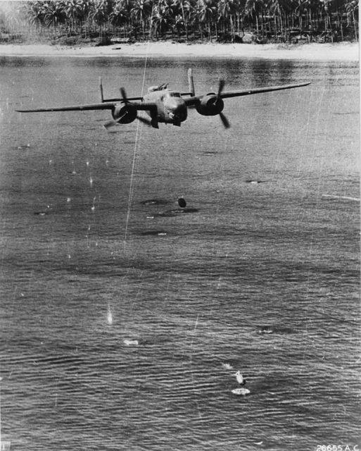
<항모로 돌아가는 길> 1만1천톤짜리 작은 호위항모에 착함하는 것은 언제나 살 떨리는 경험. 그러나 그것보다 더 어려운 것이 야간에 호위항모를 찾아내는 일. 대서양에서 대잠전을 벌이던 호위항모들은 야간에 4대의 초계기를 띄우고 어두운 바다에서 슈노클을 내밀고 충전하는 U-boat를 탐색했는데, 이 4대의 초계기는 항모를 중심으로 각각 1/4씩의 원호, 즉 90도 구역씩을 담당. 30도 방향으로 나갔다가 30도 만큼 횡단해서 30도 방향으로 귀환하는 방식. 근데 야간에는 특히 무전 침묵을 지키며 암흑 속에서 dead reckoning, 즉 아무런 유도 장치 없이 나침반과 속도계만 가지고 항모를 찾아돌아와야 함. 조종사들은 나름대로 계산을 해서 비행에 나섰는데, 조종석에 앉아 이함할 때면 꼭 갑판 요원이 '항모의 항로가 xxx로 바뀔 것이고 바람 방향은 xxx이니까 굿 럭'이라고 적은 작은 칠판을 들고 서있었고, 그러면 하늘 위의 좁고 깜깜한 조종석에 앉아 욕을 하면서 항로를 다시 계산해야 했다고. 사진1이 1인용 항법 보드인 Mark 3A Plotting Board. 사진2는 그것과 함께 사용하는 해도.
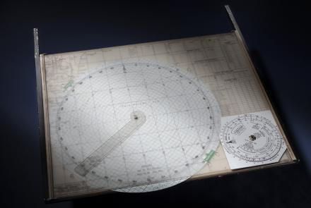 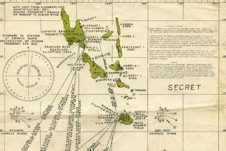
<항모가 없으면 화물선에라도> 1983년 6월, 포르투갈 인근 대서양에서 NATO 합동 훈련 중이던 HMS Illustrious (2만2천톤, 28노트)에서 2대의 Sea Harrier가 출격. 이들에게 주어진 임무는 전시 상황 가정하고 함께 훈련 중이던 프랑스 해군 항모를 무전 침묵 속에서 레이더 없이 찾으라는 것. 이 두대는 곧 헤어져 각각에게 주어진 구역을 정찰한 뒤 목표물을 찾지 못하고 귀함. 그런데 문제는 이들 중 Ian Watson 중위는 초짜인데다 항모에서의 첫임무였다는 것. 나름대로 계산을 해서 날아간 곳에 HMS Illustrious가 보이지 않자 왓슨 중위는 지침을 어기고 무전기를 켜고 모함을 애타게 호출. 그런데 알고보니 무전기가 진짜 고장. 쑥쑥 게이지가 내려가는 연료 계기판 때문에 패닉에 빠진 왓슨은 배들이 많이 다니는 항로로 무작정 날아감. 천만다행으로 작은 스페인 화물선 Alraigo를 발견. 처음에는 이 화물선 옆에서 낙하산 펴고 탈출하려던 왓슨은 가만 보니 화물선 갑판에 놓인 컨테이너 위에 해리어를 수직착함 시킬 수 있을 것 같은 근거없는 자신감이 생겨남. 그래서 본능대로 착함. 착함은 그런대로 잘 되었으나 불행히도 해리어가 착함 뒤에 뒤로 슬슬 미끄러져 컨테이너 뒤에 놓여있던 작은 중고밴 위에 털썩 추락. 이게 소위 Alraigo 사건. 황당해하는 선원들에게 왓슨 중위는 '영국으로 가자' 라고 뻔뻔스럽게 요구했으나 당연히 씨알도 안 먹혔고 배는 원래 목적지인 카나리 제도로 직행. 나중에 이 화물선 선주와 선원들은 영국 해군에게 '긴급 구조에 따른 보상금'을 요구해서 57만 파운드를 받아냄. 로열 네이비 조사 결과 왓슨 중위는 원래 항모 이착함시 받아야 하는 훈련의 75%만 받은 상태였고 항모에 태워서는 안되는 친구였음. 왓슨은 견책을 받고 책상 근무를 명령 받았으나 결국 조종사로 복귀하여 16년 뒤 전역할 때까지 3천시간의 비행시간을 채움. 이 기체는 왓슨보다 7년 더 로열 네이비에서 복무하다 2003년 은퇴하여 영국 노팅엄셔의 Newark Air Museum에 전시됨. ** 화물선에 착함한 뒤 카나리 제도에 도착할 때까지 나흘 동안 어색하게 식당에서 눈치밥 먹었을 왓슨 중위의 심정은 어땠을지
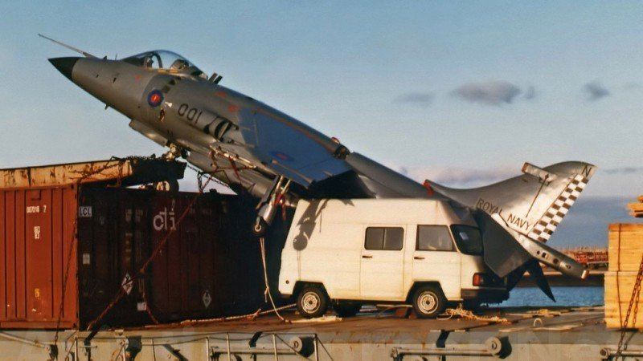 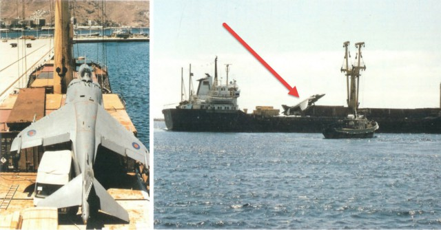
<The Great Marianas Turkey Shoot> 1944년 6월, 필리핀해에서 미해군 항모 15척(정규항모 7척, 경항모 8척)과 일본해군 항모 9척(정규항모 5척, 경항모 4척)이 격돌. 미해군이 함재기 123기를 상실할 때 일본은 600여기를 상실하고 정규항모 3척도 꼬로록 말아먹음. 일본해군의 기술적, 숫적, 전술적 열세가 확실히 드러난 전투. 이 전투에서 USS Lexington의 한 조종사가 착함해서 debriefing할 때 "와 ㅅㅂ 고향에서 야생 칠면조 사냥하는 것 같았어!" 라고 한 것에서 The Great Marianas Turkey Shoot 이라는 별명이 붙었음. 사진3은 한번 출격에서 일본 급강하 폭격기 6대를 격추한 Alexander Vraciu 중위.
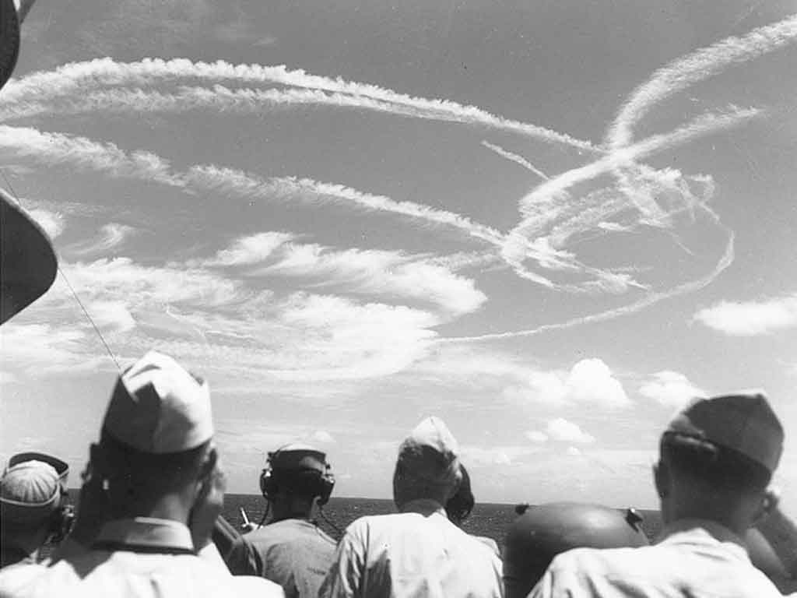 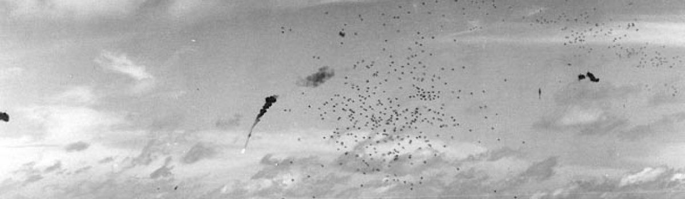 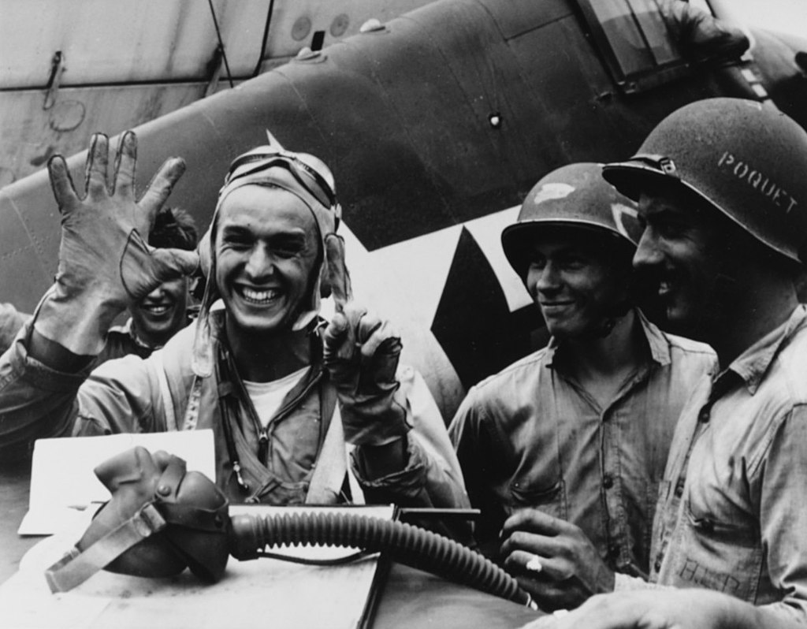
<격추왕의 전공 과목은?> 아래 포스팅에서 한번 출격에 6대의 일본 급강하 폭격기를 잡은 Alexander Vraciu 중위는 이름에서 짐작할 수 있듯이 드라큘라의 나라 루마니아 출신 이민자 부모 밑에서 태어난 이민 2세. 사진에서 보듯이 총 19대의 일본기를 격추했는데 이 기록으로 딱 4달간 미해군 격추왕 타이틀을 누림. 최고 기록이었던 6대 몰살시, 기관총탄을 딱 360발 소비했다고 전해짐. 후에 필리핀에서 대공포에 맞아 격추되어 5주간 항일 필리핀 게릴라 부대와 함께 활동하기도. 해군사관학교 출신이 아니라 인디애나 주 그린캐슬이라는 소도시 DePauw University 라는 조그마한 기독교 대학 출신. 전공은 사회학. 테스트 파일럿 등으로 21년간 복무 후 중령으로 예편해서 웰스파고 은행에서 제2의 인생을 보냄. 96세까지 천수를 다 누림. ** 문송하다 하지말라, 항법은 삼각함수만 알면 누구나 할 수 있다.
** 실은 미리 계산된 표가 장착된 계산기를 주므로 외우지 않아도 된다.
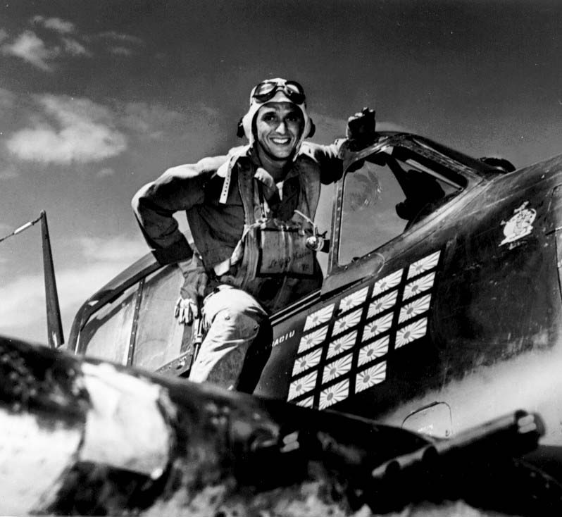
<야! 쏘랜다고 진짜 쏘면 어떡해?> 1987년 9월 지중해에서 훈련 중인 미공군 RF-4C에게 USS Saratoga를 찾아서 함체 번호를 인식할 만한 거리에서 사진으로 찍어오몀 kill로 인정해준다는 미션을 줌. 이 사실을 새러토가는 통보받았으나 훈련 중인 새러토가의 F-14들은 그 사실을 몰랐음. 그 등 뒤에 젊고 경험이 적은 중위 Dorsey가 모는 새러토가의 F-14가 '쟨 뭐지?' 하는 생각에 따라붙음. RF-4C가 새러토가를 발견하고 사진을 찍으러 다이빙에 들어가자 도지 중위가 모함에 그 사실을 알림. 그러자 돌아온 새러토가의 응답 "Red and free on your contact.'' (이건 무기 발사를 허락하는 용어) 놀란 도지가 후방 좌석의 Radar Officer Holland에게 질문 "Jesus! 'Do they want me to shoot this guy?'' 이게 당연히 훈련이고 시뮬레이션이며, 도지도 그걸 알 거라고 생각하던 홀랜드는 망설이지 않고 응답 "Yes-shoot!" 도지는 정말 sidewinder를 쐈음. 미사일이 발사되자 뒷좌석의 홀란드도 깜놀 "What was that?" RF-4C는 꼬리에 미사일을 맞고 추락. 다행히 두 조종사는 탈출에 성공하여 새러토가에 구조됨. 새러토가의 승조원들에게나 구조된 두 공군 조종사들에게나 무척 난감한 상황이었다고. 이 대형 사고를 친 도지 중위에게 미해군은 조종 면허를 박탈하지는 않았지만 두번 다시 미해군 항공기 조종석에 태우지는 않았음. 이후 정보장교가 된 도지는 25년 뒤 결국 해군 소장까지 진급함.
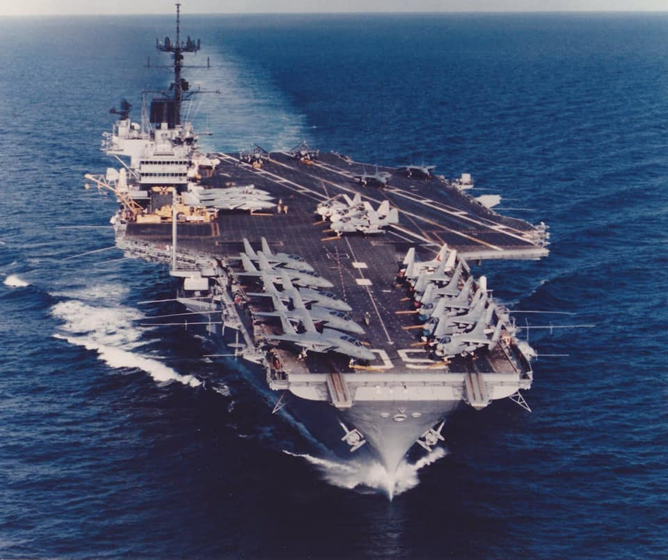 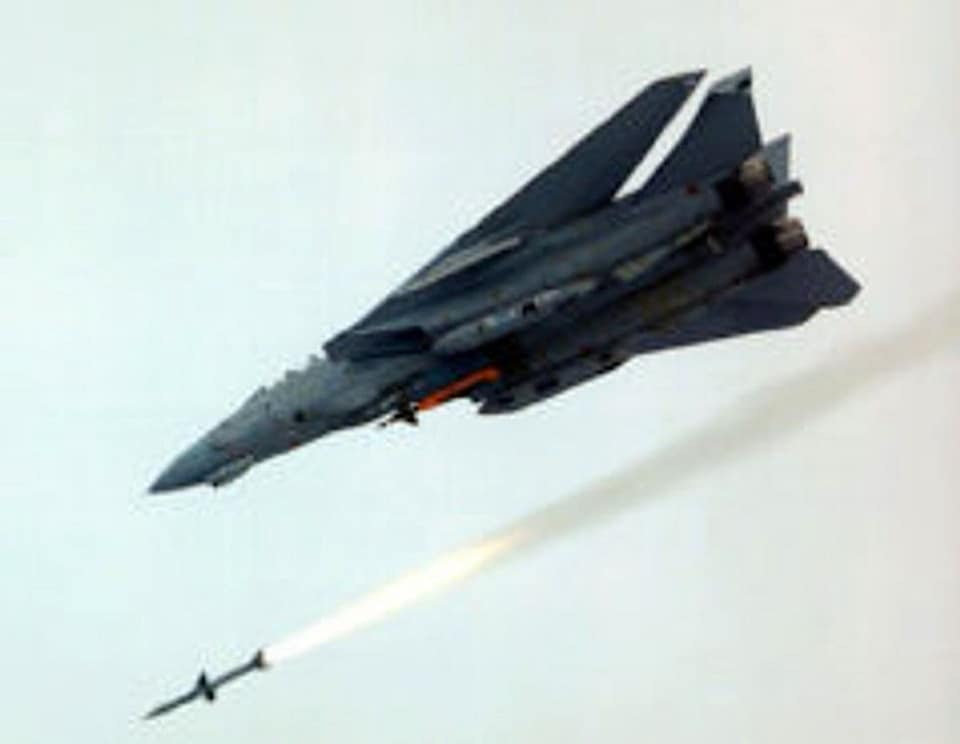
<러시아 핵잠수함 폐기물은 어디로 갔나> 공산국가니까 경제성보다는 국민의 이익에 따라 처리되었을 것 같지만 실상은 정반대로, 정부 맘대로 막 해도 되니까 정말 막 했음. 크게 2곳으로 갔는데... 1) 카라 해 (Kara Sea) 이 곳 해저에는 1만7천통의 핵폐기물 밀폐 드럼통과 16개의 원자로, 그리고 5척의 퇴역 핵잠수함이 그대로 꼬로록 되어있음. 2) 블라디보스톡 항구 잠수함 해체할 때 나온 핵폐기물들이 그냥 블라디보스톡 파블롭크스(Pavlovks) 잠수함 기지 부둣가의 바지 위에 떠있음. ** 심각한 이야기니 더 자세히 알고 싶으신 분은 아래 BBC 링크 읽어보세요.
https://www.bbc.com/future/article/20150330-where-nuclear-subs-go-to-die
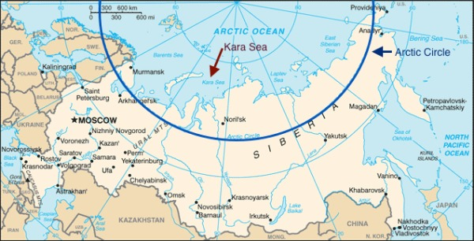 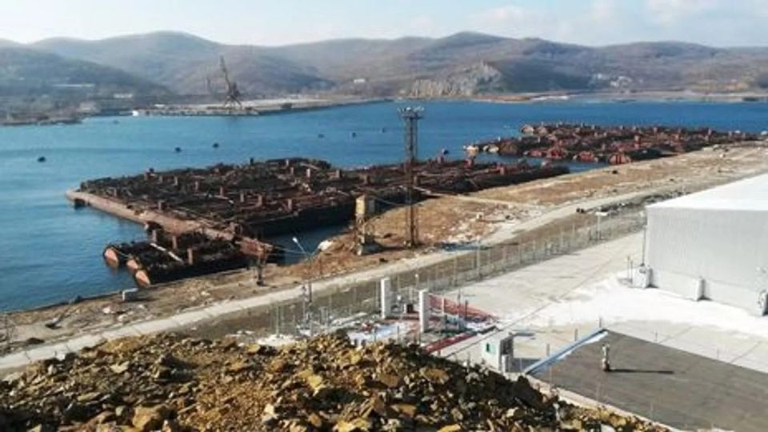